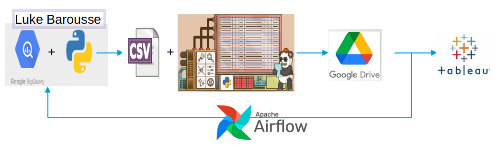

Years of Experience in Data Science Job Market
This project aims to examin 1.4 million job postings to provide
data-deriven answer to
"What is the required years of Experience for starting or changing the level in the
Data Science job mark"?

Data collection involved using Jupyter Notebook to extract data from BigQuery. Subsequently, with the assistance of Pandas and Numpy, the data cleaning process was carried out. A training set was defined by reading job descriptions from job postings for the purpose of implementing Supervised Machine Learning using the Logistic Regression method. This facilitated the classification of three levels: Senior, Junior, and Not Mentioned. Next, the minimum years of expertise, which are typically presented as a range, were identified by searching for the terms 'year' or 'years'. To visualize the data and present project findings, Tableau was employed. Finally, to create a real-time dashboard, Apache Airflow and Python were utilized for Extract, Transform, Load (ETL) of the required data.
